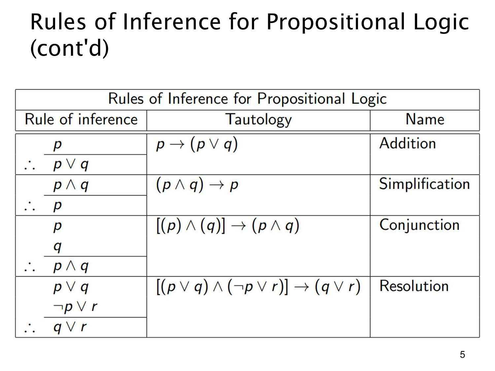

L1.3 · 第 5 页讲解原文
查看这一页课件

命题逻辑的四条补充推理规则
这页延续第 4 页的表格，列出另外四条有效推理形式。表中“永真式”一栏说明：只要前提真，结论一定真。
加法规则（addition）：从 p 可推出 p∨q，因为不论 q 真假，只要 p 真，析取式就真。对应永真式是 p→(p∨q)。这里的“addition”并非数字加法，而是把一个可选分支加进逻辑“或”。
化简规则（simplification）：从 p∧q 可推出 p，对应 (p∧q)→p；同理也能推出 q。合取为真时，两部分必各自为真。
合取规则（conjunction）：若分别已经得到 p 和 q，便可推出 p∧q。课件把两个前提合在一起写成 [p∧q]→(p∧q)，以展示其永真性；实际证明中，这一步用来把两条分别成立的结果合成一条。
归结规则（resolution）：由 p∨q 与 ¬p∨r，推出 q∨r，对应
[(p∨q)∧(¬p∨r)]→(q∨r).
理解它可按 p 分情况：若 p 真，第二个前提要真就迫使 r 真；若 p 假，第一个前提要真就迫使 q 真。两种情况都让 q∨r 真。归结相当于在两条含互补文字 p 与 ¬p 的析取式之间消去它们。
应用这些规则时，每一步只能写出规则保证的结论。例如从 p∨q 不能单独推出 p；从 p∧q 取出一项可以，从两个已知真命题合成合取也可以。